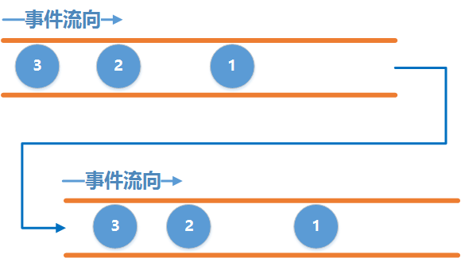

<!DOCTYPE html>
<html>
<head><meta name="generator" content="Hexo 3.8.0">
  <meta charset="utf-8">
  

  
  <title>OneMena</title>
  <meta name="viewport" content="width=device-width, initial-scale=1, maximum-scale=1">
  <meta property="og:type" content="website">
<meta property="og:title" content="OneMena">
<meta property="og:url" content="http://yoursite.com/index.html">
<meta property="og:site_name" content="OneMena">
<meta property="og:locale" content="zh-Hans">
<meta name="twitter:card" content="summary">
<meta name="twitter:title" content="OneMena">
  
    <link rel="alternate" href="/atom.xml" title="OneMena" type="application/atom+xml">
  
  
    <link rel="icon" href="/favicon.png">
  
  
    <link href="//fonts.googleapis.com/css?family=Source+Code+Pro" rel="stylesheet" type="text/css">
  
  <link rel="stylesheet" href="/css/style.css">
</head>
</html>
<body>
  <div id="container">
    <div id="wrap">
      <header id="header">
  <div id="banner"></div>
  <div id="header-outer" class="outer">
    <div id="header-title" class="inner">
      <h1 id="logo-wrap">
        <a href="/" id="logo">OneMena</a>
      </h1>
      
    </div>
    <div id="header-inner" class="inner">
      <nav id="main-nav">
        <a id="main-nav-toggle" class="nav-icon"></a>
        
          <a class="main-nav-link" href="/">Home</a>
        
          <a class="main-nav-link" href="/archives">Archives</a>
        
      </nav>
      <nav id="sub-nav">
        
          <a id="nav-rss-link" class="nav-icon" href="/atom.xml" title="RSS Feed"></a>
        
        <a id="nav-search-btn" class="nav-icon" title="Search"></a>
      </nav>
      <div id="search-form-wrap">
        <form action="//google.com/search" method="get" accept-charset="UTF-8" class="search-form"><input type="search" name="q" class="search-form-input" placeholder="Search"><button type="submit" class="search-form-submit">&#xF002;</button><input type="hidden" name="sitesearch" value="http://yoursite.com"></form>
      </div>
    </div>
  </div>
</header>
      <div class="outer">
        <section id="main">
  
    <article id="post-WorkManager" class="article article-type-post" itemscope="" itemprop="blogPost">
  <div class="article-meta">
    <a href="/2018/11/15/WorkManager/" class="article-date">
  <time datetime="2018-11-15T02:31:13.000Z" itemprop="datePublished">2018-11-15</time>
</a>
    
  </div>
  <div class="article-inner">
    
    
      <header class="article-header">
        
  
    <h1 itemprop="name">
      <a class="article-title" href="/2018/11/15/WorkManager/">WorkManager</a>
    </h1>
  

      </header>
    
    <div class="article-entry" itemprop="articleBody">
      
        <p>#作用<br>WorkManager API可以轻松指定可延迟的异步任务以及何时运行它们。这些API允许您创建任务并将其交给WorkManager立即运行或在适当的时间运行。</p>
<p>#引入</p>
<figure class="highlight gradle"><table><tr><td class="gutter"><pre><span class="line">1</span><br><span class="line">2</span><br><span class="line">3</span><br><span class="line">4</span><br><span class="line">5</span><br><span class="line">6</span><br><span class="line">7</span><br><span class="line">8</span><br><span class="line">9</span><br><span class="line">10</span><br><span class="line">11</span><br></pre></td><td class="code"><pre><span class="line"><span class="keyword">dependencies</span> &#123;</span><br><span class="line">    <span class="keyword">def</span> work_version = <span class="string">"1.0.0-alpha11"</span></span><br><span class="line"></span><br><span class="line">    implementation <span class="string">"android.arch.work:work-runtime:$work_version"</span> <span class="comment">// use -ktx for Kotlin</span></span><br><span class="line"></span><br><span class="line">    <span class="comment">// optional - Firebase JobDispatcher support</span></span><br><span class="line">    implementation <span class="string">"android.arch.work:work-firebase:$work_version"</span></span><br><span class="line"></span><br><span class="line">    <span class="comment">// optional - Test helpers</span></span><br><span class="line">    androidTestImplementation <span class="string">"android.arch.work:work-testing:$work_version"</span></span><br><span class="line">&#125;</span><br></pre></td></tr></table></figure>
<p>#基本用法</p>
<p>##1、Work类<br>Worker 是一个抽象类，用来指定需要执行的具体任务。我们需要继承 Worker 类，并实现它的 doWork 方法：</p>
<figure class="highlight kotlin"><table><tr><td class="gutter"><pre><span class="line">1</span><br><span class="line">2</span><br><span class="line">3</span><br><span class="line">4</span><br><span class="line">5</span><br><span class="line">6</span><br><span class="line">7</span><br><span class="line">8</span><br><span class="line">9</span><br><span class="line">10</span><br><span class="line">11</span><br><span class="line">12</span><br><span class="line">13</span><br><span class="line">14</span><br><span class="line">15</span><br><span class="line">16</span><br></pre></td><td class="code"><pre><span class="line"><span class="class"><span class="keyword">class</span> <span class="title">MyWorker</span>:<span class="type">Worker</span></span>() &#123;</span><br><span class="line"></span><br><span class="line">    <span class="keyword">val</span> tag = javaClass.simpleName</span><br><span class="line"></span><br><span class="line">   <span class="keyword">override</span> <span class="function"><span class="keyword">fun</span> <span class="title">onStopped</span><span class="params">(cancelled: <span class="type">Boolean</span>)</span></span> &#123;</span><br><span class="line">       <span class="keyword">super</span>.onStopped(cancelled)</span><br><span class="line">       <span class="comment">//当任务结束时会回调这里</span></span><br><span class="line">       ...</span><br><span class="line">   &#125;</span><br><span class="line"></span><br><span class="line">    <span class="keyword">override</span> <span class="function"><span class="keyword">fun</span> <span class="title">doWork</span><span class="params">()</span></span>: Result &#123;</span><br><span class="line"></span><br><span class="line">        Log.d(tag,<span class="string">"任务执行完毕！"</span>)</span><br><span class="line">        <span class="keyword">return</span> Worker.Result.SUCCESS</span><br><span class="line">    &#125;</span><br><span class="line">&#125;</span><br></pre></td></tr></table></figure>
<p>##2、WorkRequest类<br>也是一个抽象类，可以对 Work 进行包装，同时装裱上一系列的约束（Constraints），这些 Constraints 用来向系统指明什么条件下，或者什么时候开始执行任务。</p>
<p>WorkManager 向我们提供了 WorkRequest 的两个子类：</p>
<ul>
<li><p>OneTimeWorkRequest：单次任务</p>
</li>
<li><p>PeriodicWorkRequest：周期任务</p>
</li>
</ul>
<figure class="highlight kotlin"><table><tr><td class="gutter"><pre><span class="line">1</span><br><span class="line">2</span><br><span class="line">3</span><br></pre></td><td class="code"><pre><span class="line"><span class="keyword">val</span> request1 = PeriodicWorkRequestBuilder&lt;MyWorker&gt;(<span class="number">60</span>,TimeUnit.SECONDS).build()</span><br><span class="line"></span><br><span class="line"><span class="keyword">val</span> request2 = OneTimeWorkRequestBuilder&lt;MyWorker&gt;().build()</span><br></pre></td></tr></table></figure>
<p>##3、Constraints类<br>指定对任务运行时间的限制（例如，“仅在连接到网络时”）</p>
<figure class="highlight kotlin"><table><tr><td class="gutter"><pre><span class="line">1</span><br><span class="line">2</span><br><span class="line">3</span><br><span class="line">4</span><br><span class="line">5</span><br><span class="line">6</span><br><span class="line">7</span><br><span class="line">8</span><br><span class="line">9</span><br><span class="line">10</span><br><span class="line">11</span><br><span class="line">12</span><br></pre></td><td class="code"><pre><span class="line"><span class="keyword">val</span> myConstraints = Constraints.Builder()</span><br><span class="line">        .setRequiresDeviceIdle(<span class="literal">true</span>)<span class="comment">//指定&#123;@link WorkRequest&#125;运行时设备是否为空闲</span></span><br><span class="line">        .setRequiresCharging(<span class="literal">true</span>)<span class="comment">//指定要运行的&#123;@link WorkRequest&#125;是否应该插入设备</span></span><br><span class="line">        .setRequiredNetworkType(NetworkType.NOT_ROAMING)</span><br><span class="line">        .setRequiresBatteryNotLow(<span class="literal">true</span>)<span class="comment">//指定设备电池是否不应低于临界阈值</span></span><br><span class="line">        .setRequiresCharging(<span class="literal">true</span>)<span class="comment">//网络状态</span></span><br><span class="line">        .setRequiresDeviceIdle(<span class="literal">true</span>)<span class="comment">//指定&#123;@link WorkRequest&#125;运行时设备是否为空闲</span></span><br><span class="line">        .setRequiresStorageNotLow(<span class="literal">true</span>)<span class="comment">//指定设备可用存储是否不应低于临界阈值</span></span><br><span class="line">        .build()</span><br><span class="line"><span class="keyword">val</span> request = PeriodicWorkRequestBuilder&lt;MyWorker&gt;(<span class="number">24</span>,TimeUnit.SECONDS)</span><br><span class="line">        .setConstraints(myConstraints)<span class="comment">//注意看这里！！！</span></span><br><span class="line">        .build()</span><br></pre></td></tr></table></figure>
<p>##4、添加标签<br>我们可以给两个相同任务的request都加上了标签，使他们成为了一个组：A组。这样的好处是以后可以直接控制整个组就行了，组内的每个成员都会受到影响。也可以为一个request添加多个标签。</p>
<figure class="highlight kotlin"><table><tr><td class="gutter"><pre><span class="line">1</span><br><span class="line">2</span><br><span class="line">3</span><br><span class="line">4</span><br><span class="line">5</span><br><span class="line">6</span><br><span class="line">7</span><br></pre></td><td class="code"><pre><span class="line"><span class="keyword">val</span> request1 = OneTimeWorkRequestBuilder&lt;MyWorker&gt;()</span><br><span class="line">                .addTag(<span class="string">"A"</span>)<span class="comment">//标签</span></span><br><span class="line">                .build()</span><br><span class="line"><span class="keyword">val</span> request2 = OneTimeWorkRequestBuilder&lt;MyWorker&gt;()</span><br><span class="line">                .addTag(<span class="string">"A"</span>)<span class="comment">//标签</span></span><br><span class="line">                .addTag(<span class="string">"B"</span>)<span class="comment">//标签</span></span><br><span class="line">                .build()</span><br></pre></td></tr></table></figure>
<p>##5、向任务添加参数</p>
<p>在Request中传参</p>
<figure class="highlight kotlin"><table><tr><td class="gutter"><pre><span class="line">1</span><br><span class="line">2</span><br><span class="line">3</span><br><span class="line">4</span><br><span class="line">5</span><br><span class="line">6</span><br><span class="line">7</span><br></pre></td><td class="code"><pre><span class="line"><span class="keyword">val</span> <span class="keyword">data</span>=Data.Builder()</span><br><span class="line">        .putInt(<span class="string">"A"</span>,<span class="number">1</span>)</span><br><span class="line">        .putString(<span class="string">"B"</span>,<span class="string">"2"</span>)</span><br><span class="line">        .build()</span><br><span class="line"><span class="keyword">val</span> request2 = PeriodicWorkRequestBuilder&lt;MyWorker&gt;(<span class="number">24</span>,TimeUnit.SECONDS)</span><br><span class="line">        .setInputData(<span class="keyword">data</span>)</span><br><span class="line">        .build()</span><br></pre></td></tr></table></figure>
<p>在 Worker 中使用</p>
<figure class="highlight kotlin"><table><tr><td class="gutter"><pre><span class="line">1</span><br><span class="line">2</span><br><span class="line">3</span><br><span class="line">4</span><br><span class="line">5</span><br><span class="line">6</span><br><span class="line">7</span><br><span class="line">8</span><br><span class="line">9</span><br><span class="line">10</span><br><span class="line">11</span><br></pre></td><td class="code"><pre><span class="line"><span class="class"><span class="keyword">class</span> <span class="title">MyWorker</span>:<span class="type">Worker</span></span>() &#123;</span><br><span class="line"></span><br><span class="line">    <span class="keyword">val</span> tag = javaClass.simpleName</span><br><span class="line"></span><br><span class="line">    <span class="keyword">override</span> <span class="function"><span class="keyword">fun</span> <span class="title">doWork</span><span class="params">()</span></span>: Result &#123;</span><br><span class="line"></span><br><span class="line">        <span class="keyword">val</span> A = inputData.getInt(<span class="string">"A"</span>,<span class="number">0</span>)</span><br><span class="line">        <span class="keyword">val</span> B = inputData.getString(<span class="string">"B"</span>)</span><br><span class="line">        <span class="keyword">return</span> Worker.Result.SUCCESS</span><br><span class="line">    &#125;</span><br><span class="line">&#125;</span><br></pre></td></tr></table></figure>
<p>##6、任务的返回值<br>很类似很类似的，任务的返回值也很简单：</p>
<figure class="highlight kotlin"><table><tr><td class="gutter"><pre><span class="line">1</span><br><span class="line">2</span><br><span class="line">3</span><br><span class="line">4</span><br><span class="line">5</span><br><span class="line">6</span><br><span class="line">7</span><br><span class="line">8</span><br><span class="line">9</span><br><span class="line">10</span><br><span class="line">11</span><br><span class="line">12</span><br></pre></td><td class="code"><pre><span class="line"><span class="keyword">override</span> <span class="function"><span class="keyword">fun</span> <span class="title">doWork</span><span class="params">()</span></span>: Result &#123;</span><br><span class="line"></span><br><span class="line">    <span class="keyword">val</span> A = inputData.getInt(<span class="string">"A"</span>,<span class="number">0</span>)</span><br><span class="line">    <span class="keyword">val</span> B = inputData.getString(<span class="string">"B"</span>)</span><br><span class="line"></span><br><span class="line">    <span class="keyword">val</span> <span class="keyword">data</span> = Data.Builder()</span><br><span class="line">            .putBoolean(<span class="string">"C"</span>,<span class="literal">true</span>)</span><br><span class="line">            .putFloat(<span class="string">"D"</span>,<span class="number">0</span>f)</span><br><span class="line">            .build()</span><br><span class="line">    outputData = <span class="keyword">data</span><span class="comment">//返回值</span></span><br><span class="line">    <span class="keyword">return</span> Worker.Result.SUCCESS</span><br><span class="line">&#125;</span><br></pre></td></tr></table></figure>
<p>doWork 要求最后返回一个 Result，这个 Result 是一个枚举，它有几个固定的值：</p>
<ul>
<li><p>FAILURE 任务失败。</p>
</li>
<li><p>RETRY 遇到暂时性失败，此时可使用</p>
</li>
<li>WorkRequest.Builder.setBackoffCriteria(BackoffPolicy, long, TimeUnit)来重试。</li>
<li>SUCCESS 任务成功。</li>
</ul>
<p>##7、WorkManager类<br>经过上面的操作，相信我们已经能够成功创建 request 了，接下来我们就需要把任务放进任务队列，我们使用 WorkManager。</p>
<p>WorkManager 是个单例，它负责调度任务并且监听任务状态。</p>
<figure class="highlight kotlin"><table><tr><td class="gutter"><pre><span class="line">1</span><br></pre></td><td class="code"><pre><span class="line">WorkManager.getInstance().enqueue(request)</span><br></pre></td></tr></table></figure>
<p>当我们的 request 入列后，WorkManager 会给它分配一个 work ID，之后我们可以使用这个work id 来取消或者停止任务</p>
<figure class="highlight kotlin"><table><tr><td class="gutter"><pre><span class="line">1</span><br></pre></td><td class="code"><pre><span class="line">WorkManager.getInstance().cancelWorkById(request.id)</span><br></pre></td></tr></table></figure>
<p>注意：WorkManager 并不一定能结束任务，因为任务有可能已经执行完毕了。</p>
<p>同时，WorkManager 还提供了其他结束任务的方法：</p>
<ul>
<li><p>cancelAllWork():取消所有任务</p>
</li>
<li><p>cancelAllWorkByTag(tag:String):取消一组带有相同标签的任务</p>
</li>
<li><p>cancelUniqueWork(uniqueWorkName:String):取消唯一任务</p>
</li>
</ul>
<p>##8、WorkStatus类<br>当 WorkManager 把任务加入队列后，会为每个WorkRequest对象提供一个 LiveData。 LiveData 持有 WorkStatus;通过观察该 LiveData, 我们可以确定任务的当前状态, 并在任务完成后获取所有返回的值。</p>
<p>获取request状态的方式：</p>
<ul>
<li>getStatusById(UUID)</li>
</ul>
<figure class="highlight kotlin"><table><tr><td class="gutter"><pre><span class="line">1</span><br></pre></td><td class="code"><pre><span class="line"><span class="keyword">val</span> liveData: LiveData&lt;WorkStatus&gt; = WorkManager.getInstance().getStatusById(request.id)</span><br></pre></td></tr></table></figure>
<ul>
<li>getStatusesByTag(String)</li>
</ul>
<figure class="highlight kotlin"><table><tr><td class="gutter"><pre><span class="line">1</span><br></pre></td><td class="code"><pre><span class="line"><span class="keyword">val</span> liveData: LiveData&lt;List&lt;WorkStatus&gt;&gt; = WorkManager.getInstance().getStatusesByTag(tag)</span><br></pre></td></tr></table></figure>
<ul>
<li>getStatusesForUniqueWork(String)</li>
</ul>
<figure class="highlight kotlin"><table><tr><td class="gutter"><pre><span class="line">1</span><br></pre></td><td class="code"><pre><span class="line"><span class="keyword">val</span> liveData: LiveData&lt;List&lt;WorkStatus&gt;&gt; = WorkManager.getInstance().getStatusesByTag(uniqueWorkName)</span><br></pre></td></tr></table></figure>
<p> WorkStatus 到底都包涵什么，可以看看它的源码：</p>
<figure class="highlight kotlin"><table><tr><td class="gutter"><pre><span class="line">1</span><br><span class="line">2</span><br><span class="line">3</span><br><span class="line">4</span><br></pre></td><td class="code"><pre><span class="line"><span class="keyword">private</span> <span class="meta">@NonNull</span> UUID mId;</span><br><span class="line"><span class="keyword">private</span> <span class="meta">@NonNull</span> State mState;</span><br><span class="line"><span class="keyword">private</span> <span class="meta">@NonNull</span> Data mOutputData;</span><br><span class="line"><span class="keyword">private</span> <span class="meta">@NonNull</span> Set&lt;String&gt; mTags;</span><br></pre></td></tr></table></figure>
<p>##10、任务链<br>有时候我们想让应用程序按照特定的顺序运行多个任务。 WorkManager允许我们创建和排队多个任务的工作序列，以及它们应该以什么顺序运行。</p>
<p>例如，假如我们的应用有三个 OneTimeWorkRequest 对象：workA, workB, 和 workC，这些任务必须按照该顺序执行,要想将它们排队;</p>
<p>第一步：请使用WorkManager.beginWith() 方法创建一个序列，并传递第一个OneTimeWorkRequest对象，该方法返回一个WorkContinuation对象，该对象定义了一系列任务。</p>
<p>第二步：然后依次使用 WorkContinuation.then()添加剩余的OneTimeWorkRequest对象，最后使用 WorkContinuation.enqueue()排序整个序列：</p>
<p>例1：workA 、B 、C顺序执行</p>
<figure class="highlight kotlin"><table><tr><td class="gutter"><pre><span class="line">1</span><br><span class="line">2</span><br><span class="line">3</span><br><span class="line">4</span><br><span class="line">5</span><br><span class="line">6</span><br><span class="line">7</span><br><span class="line">8</span><br></pre></td><td class="code"><pre><span class="line">WorkManager.getInstance()</span><br><span class="line">    .beginWith(workA)</span><br><span class="line">        <span class="comment">// Note: WorkManager.beginWith() returns a</span></span><br><span class="line">        <span class="comment">// WorkContinuation object; the following calls are</span></span><br><span class="line">        <span class="comment">// to WorkContinuation methods</span></span><br><span class="line">    .then(workB)    <span class="comment">// FYI, then() returns a new WorkContinuation instance</span></span><br><span class="line">    .then(workC)</span><br><span class="line">    .enqueue()</span><br></pre></td></tr></table></figure>
<p>例2：workA1、A2、A3同时开始执行,然后执行 B 和 C</p>
<figure class="highlight kotlin"><table><tr><td class="gutter"><pre><span class="line">1</span><br><span class="line">2</span><br><span class="line">3</span><br><span class="line">4</span><br><span class="line">5</span><br><span class="line">6</span><br><span class="line">7</span><br><span class="line">8</span><br></pre></td><td class="code"><pre><span class="line">WorkManager.getInstance()</span><br><span class="line">    <span class="comment">// First, run all the A tasks (in parallel):</span></span><br><span class="line">    .beginWith(workA1, workA2, workA3)</span><br><span class="line">    <span class="comment">// ...when all A tasks are finished, run the single B task:</span></span><br><span class="line">    .then(workB)</span><br><span class="line">    <span class="comment">// ...then run the C tasks (in any order):</span></span><br><span class="line">    .then(workC)</span><br><span class="line">    .enqueue()</span><br></pre></td></tr></table></figure>
<p>例3：workA 和 B 顺序链式执行，C 和 D 顺序链式执行，且他们同步进行，他们执行完之后，执行 E</p>
<figure class="highlight kotlin"><table><tr><td class="gutter"><pre><span class="line">1</span><br><span class="line">2</span><br><span class="line">3</span><br><span class="line">4</span><br><span class="line">5</span><br><span class="line">6</span><br><span class="line">7</span><br><span class="line">8</span><br><span class="line">9</span><br><span class="line">10</span><br></pre></td><td class="code"><pre><span class="line"><span class="keyword">val</span> chain1 = WorkManager.getInstance()</span><br><span class="line">    .beginWith(workA)</span><br><span class="line">    .then(workB)</span><br><span class="line"><span class="keyword">val</span> chain2 = WorkManager.getInstance()</span><br><span class="line">    .beginWith(workC)</span><br><span class="line">    .then(workD)</span><br><span class="line"><span class="keyword">val</span> chain3 = WorkContinuation</span><br><span class="line">    .combine(chain1, chain2)</span><br><span class="line">    .then(workE)</span><br><span class="line">chain3.enqueue()</span><br></pre></td></tr></table></figure>

      
    </div>
    <footer class="article-footer">
      <a data-url="http://yoursite.com/2018/11/15/WorkManager/" data-id="cjr0b3d330001r9s6jh39tywz" class="article-share-link">Share</a>
      
      
  <ul class="article-tag-list"><li class="article-tag-list-item"><a class="article-tag-list-link" href="/tags/Android/">Android</a></li><li class="article-tag-list-item"><a class="article-tag-list-link" href="/tags/WorkManager/">WorkManager</a></li></ul>

    </footer>
  </div>
  
</article>


  
    <article id="post-Dagger2" class="article article-type-post" itemscope="" itemprop="blogPost">
  <div class="article-meta">
    <a href="/2018/08/14/Dagger2/" class="article-date">
  <time datetime="2018-08-14T10:33:04.000Z" itemprop="datePublished">2018-08-14</time>
</a>
    
  </div>
  <div class="article-inner">
    
    
      <header class="article-header">
        
  
    <h1 itemprop="name">
      <a class="article-title" href="/2018/08/14/Dagger2/">Dagger2</a>
    </h1>
  

      </header>
    
    <div class="article-entry" itemprop="articleBody">
      
        <h1 id="Dagger2"><a href="#Dagger2" class="headerlink" title="Dagger2"></a>Dagger2</h1><h2 id="1-Dagger2简介"><a href="#1-Dagger2简介" class="headerlink" title="1. Dagger2简介"></a>1. Dagger2简介</h2><blockquote>
<p>Dagger2是Dagger的升级版，是一个<strong>==依赖注入==</strong>框架，现在由Google接手维护。这里所说的“依赖注入”，就是目标类对所依赖类的初始化的一个过程，只是这个过程现在不用程序员手动输入，而是由Dagger2框架为我们完成。</p>
<h2 id="2-Dagger2优点"><a href="#2-Dagger2优点" class="headerlink" title="2. Dagger2优点"></a>2. Dagger2优点</h2><ul>
<li><h3 id="增加开发效率"><a href="#增加开发效率" class="headerlink" title="增加开发效率"></a>增加开发效率</h3>我们之前创建对象的方式通过new关键字来完成，这是一个重复的，技术含量比较低的工作，浪费了我们的时间，Dagger2框架，让我们不用去管理这些问题。让我们更好的专注于业务。</li>
</ul>
<p>另外，我们可以使用Dagger2提供的操作符，完成一些稍复杂的问题。例如，SingleTon（单例），我们不用担心自己写的单例是否线程安全，以及使用了什么模式。</p>
<ul>
<li><h3 id="类实例变得清晰"><a href="#类实例变得清晰" class="headerlink" title="类实例变得清晰"></a>类实例变得清晰</h3>使用Component和Module，可以使得整个app的类实例结构变的很清晰。</li>
<li><h3 id="解耦"><a href="#解耦" class="headerlink" title="解耦"></a>解耦</h3>当构造方法发生变化的时候，我们不用再目标类里面做修改，我们是需要修改对应的@Inject标注的构造方法或者Module中对应的@Provides标注的创建方法。<h2 id="3-Dagger2用法"><a href="#3-Dagger2用法" class="headerlink" title="3. Dagger2用法"></a>3. Dagger2用法</h2></li>
<li><h3 id="之前创建类实例的方式"><a href="#之前创建类实例的方式" class="headerlink" title="之前创建类实例的方式"></a>之前创建类实例的方式</h3></li>
</ul>
</blockquote>
<hr>
<pre><code>public class TestA{
    TestB b = new TestB();
}

public class TestB{
    public TestB(){
        //...
    }
}
</code></pre><hr>
<ul>
<li><h3 id="Dagger2基本写法"><a href="#Dagger2基本写法" class="headerlink" title="Dagger2基本写法"></a>Dagger2基本写法</h3><h4 id="所依赖的类的构造方法无形参且不属于第三方类库"><a href="#所依赖的类的构造方法无形参且不属于第三方类库" class="headerlink" title="所依赖的类的构造方法无形参且不属于第三方类库"></a>所依赖的类的构造方法无形参且不属于第三方类库</h4></li>
</ul>
<hr>
<pre><code>public class App extends MultiDexApplication {
    private AppComponent mAppComponent;
    @Override
    public void onCreate() {
        //...
        mAppComponent = DaggerAppComponent.builder()
                .appModule(new AppModule(this))
                .build();
        //...
    }
}
</code></pre><h2 id="—"><a href="#—" class="headerlink" title="—"></a>—</h2><pre><code>public class TestA{
    @Inject
    TestB b;

    @Override
    protected void onCreate(@Nullable Bundle savedInstanceState) {
        App.getInstance().AppComponent().inject(this);
    }
}

public class TestB{
    @Inject
    public TestB(){
        //...
    }
}
</code></pre><hr>
<p>他们通过Component把他们连接起来，Component连接目标类属性及其所依赖类。</p>
<h4 id="Component是什么？"><a href="#Component是什么？" class="headerlink" title="Component是什么？"></a>Component是什么？</h4><blockquote>
<p>一个类如果是Component类，必须用Component注解来标注该类，并且该类是接口或抽象类。Component在目标类中所依赖的其他类与其他类的构造函数之间可以起到一个桥梁的作用。</p>
<p>Component需要引用到目标类的实例，Component会查找目标类中用Inject注解标注的属性，查找到相应的属性后会接着查找该属性对应的用Inject标注的构造函数（这时候就发生联系了），剩下的工作就是初始化该属性的实例并把实例进行赋值</p>
</blockquote>
<figure class="highlight plain"><table><tr><td class="gutter"><pre><span class="line">1</span><br><span class="line">2</span><br><span class="line">3</span><br></pre></td><td class="code"><pre><span class="line">graph LR</span><br><span class="line">Inject注解标注的构造方法--&gt;Component桥梁</span><br><span class="line">Component桥梁--&gt;目标类中用Inject注解标注的属性</span><br></pre></td></tr></table></figure>
<h4 id="流程"><a href="#流程" class="headerlink" title="流程"></a>流程</h4><ul>
<li>用Inject注解标注目标类中其他类，即属性</li>
<li>用Inject注解标注其他类的构造方法</li>
<li>若构造方法还依赖于其他的类，则重复进行上面2个步骤</li>
<li>调用Component的inject(Object o)方法<br>ComPonent会把目标类所依赖的实例注入到目标类中！</li>
</ul>
<h4 id="如果所依赖的类是第三方的类库或者是所依赖的类的构造方法中有形参"><a href="#如果所依赖的类是第三方的类库或者是所依赖的类的构造方法中有形参" class="headerlink" title="如果所依赖的类是第三方的类库或者是所依赖的类的构造方法中有形参"></a>如果所依赖的类是第三方的类库或者是所依赖的类的构造方法中有形参</h4><blockquote>
<p>项目中使用到了第三方的类库，第三方类库又不能修改，所以根本不可能把Inject注解加入这些类中</p>
<p>另外目标类所依赖的其他类的构造方法中，有形参的需要，也无法直接通过上面的方式获得</p>
<p>把上面这两种情况下的对象实例化，可以放在Module中</p>
</blockquote>
<h4 id="Module又是什么鬼？"><a href="#Module又是什么鬼？" class="headerlink" title="Module又是什么鬼？"></a>Module又是什么鬼？</h4><blockquote>
<p>把封装第三方类库以及构造有形参的代码放入Module中，有Module统一管理。Module其实是一个简单工厂模式，Module里面的方法基本都是创建类实例的方法。Module类需要使用Module进行标注</p>
</blockquote>
<hr>
<pre><code>@Module
public class AppModule {

    @Provides
    @Singleton
    Gson provideGson() {
        return new GsonBuilder()
                .setDateFormat(&quot;yyyy-MM-dd HH:mm:ss z&quot;)
                .registerTypeAdapter(LocalDate.class, new LocalDateGsonAdapter())
                .registerTypeAdapterFactory(PeriodGsonAdapterFactory.create())
                .registerTypeAdapter(PushData.PushType.class, new PushTypeAdapter())
                .create();
    }

    @Provides
    @Singleton
    RecordDatabaseManager provideRecordDatabaseManager(SQLiteOpenHelper SQLiteOpenHelper, UserHelper userHelper, PeriodApi periodApi, SharePreferenceUtils sharePreferenceUtils) {
        return new RecordDatabaseManagerImpl(SQLiteOpenHelper, userHelper, periodApi, sharePreferenceUtils);
    }

}
</code></pre><hr>
<blockquote>
<p>目前提供实例的地方有了，但是如何让提供的实例注入到目标类中呢，有上面的分析我们知道Component是实现注入的，那么如何让Module和Component关联起来呢？</p>
</blockquote>
<hr>
<pre><code>@Singleton
@Component(modules = AppModule.class)
public interface AppComponent {
    void inject(NumManagerActivity numManagerActivity);
}
</code></pre><hr>
<blockquote>
<p>其中Component的属性modules是关键，该属性是一个数组，可以包含多个Module。其中Component把Module提供的实例注入到目标类中。</p>
</blockquote>
<h4 id="Component是如何查找Module中提供的实例？"><a href="#Component是如何查找Module中提供的实例？" class="headerlink" title="Component是如何查找Module中提供的实例？"></a>Component是如何查找Module中提供的实例？</h4><blockquote>
<p>Module中的创建类实例方法用Provides进行标注，Component在搜索到目标类中用Inject注解标注的属性后，Component就会去Module中去查找用Provides标注的对应的创建类实例方法</p>
<p>注： Component会首先查找Module中的实例，如果Module中没有，它才回去所依赖的类去查找被@Inject标注的构造方法，所以Module的优先级要比构造方法被@Inject标注的优先级高</p>
</blockquote>
<h4 id="依赖注入迷失"><a href="#依赖注入迷失" class="headerlink" title="依赖注入迷失"></a>依赖注入迷失</h4><blockquote>
<p>若一个类的实例有多种方法可以创建出来，Component应该选择哪种方法来创建该类的实例呢？</p>
</blockquote>
<figure class="highlight plain"><table><tr><td class="gutter"><pre><span class="line">1</span><br><span class="line">2</span><br><span class="line">3</span><br></pre></td><td class="code"><pre><span class="line">sequenceDiagram</span><br><span class="line">A-&gt;&gt;Component: A中两构造方法：A()、A(...)</span><br><span class="line">Component-&gt;&gt;C: C中@Inject A a；</span><br></pre></td></tr></table></figure>
<blockquote>
<p>Qualifier（限定符）可以解决依赖注入迷失问题的</p>
</blockquote>

      
    </div>
    <footer class="article-footer">
      <a data-url="http://yoursite.com/2018/08/14/Dagger2/" data-id="cjr0b3d390003r9s6krm2pzyr" class="article-share-link">Share</a>
      
      
    </footer>
  </div>
  
</article>


  
    <article id="post-RxJava2" class="article article-type-post" itemscope="" itemprop="blogPost">
  <div class="article-meta">
    <a href="/2018/01/10/RxJava2/" class="article-date">
  <time datetime="2018-01-10T02:31:13.000Z" itemprop="datePublished">2018-01-10</time>
</a>
    
  </div>
  <div class="article-inner">
    
    
      <header class="article-header">
        
  
    <h1 itemprop="name">
      <a class="article-title" href="/2018/01/10/RxJava2/">RxJava2</a>
    </h1>
  

      </header>
    
    <div class="article-entry" itemprop="articleBody">
      
        <p>原文地址：<a href="https://www.jianshu.com/p/464fa025229e" target="_blank" rel="noopener">https://www.jianshu.com/p/464fa025229e</a></p>
<h1 id="订阅关系"><a href="#订阅关系" class="headerlink" title="订阅关系"></a>订阅关系</h1><p>观察者和被观察者可以用两根水管的关系来表示</p>
<p></p>
<p>产生事件的水管称为 <strong>上游</strong>，接收事件的水管称为 <strong>下游</strong>，对应到代码，上游为 <strong>Observable</strong>，下游为 <strong>Observer</strong>，他们之间的连接为 <strong>subscribe()</strong>。<br>创建上游的时候，我们使用 <strong>发射器</strong> 来发送事件，使用 <strong>onNext()</strong> 发送单个事件，<strong>onComplete()</strong> 表示发送完成，<strong>onError()</strong> 表示出现错误。</p>
<figure class="highlight java"><table><tr><td class="gutter"><pre><span class="line">1</span><br><span class="line">2</span><br><span class="line">3</span><br><span class="line">4</span><br><span class="line">5</span><br><span class="line">6</span><br><span class="line">7</span><br><span class="line">8</span><br><span class="line">9</span><br><span class="line">10</span><br><span class="line">11</span><br><span class="line">12</span><br><span class="line">13</span><br><span class="line">14</span><br><span class="line">15</span><br><span class="line">16</span><br><span class="line">17</span><br><span class="line">18</span><br><span class="line">19</span><br><span class="line">20</span><br><span class="line">21</span><br><span class="line">22</span><br><span class="line">23</span><br><span class="line">24</span><br><span class="line">25</span><br><span class="line">26</span><br><span class="line">27</span><br><span class="line">28</span><br><span class="line">29</span><br></pre></td><td class="code"><pre><span class="line">Observable&lt;Integer&gt; observable = Observable.create(<span class="keyword">new</span> ObservableOnSubscribe&lt;Integer&gt;() &#123;</span><br><span class="line">    <span class="meta">@Override</span></span><br><span class="line">    <span class="function"><span class="keyword">public</span> <span class="keyword">void</span> <span class="title">subscribe</span><span class="params">(ObservableEmitter&lt;Integer&gt; emitter)</span> <span class="keyword">throws</span> Exception </span>&#123;</span><br><span class="line">        emitter.onNext(<span class="number">1</span>);</span><br><span class="line">        emitter.onNext(<span class="number">2</span>);</span><br><span class="line">        emitter.onNext(<span class="number">3</span>);</span><br><span class="line">        emitter.onComplete();</span><br><span class="line">    &#125;</span><br><span class="line">&#125;);</span><br><span class="line"></span><br><span class="line">Observer&lt;Integer&gt; observer = <span class="keyword">new</span> Observer&lt;Integer&gt;() &#123;</span><br><span class="line">    <span class="meta">@Override</span></span><br><span class="line">    <span class="function"><span class="keyword">public</span> <span class="keyword">void</span> <span class="title">onSubscribe</span><span class="params">(Disposable disposable)</span> </span>&#123;</span><br><span class="line">    &#125;</span><br><span class="line"></span><br><span class="line">    <span class="meta">@Override</span></span><br><span class="line">    <span class="function"><span class="keyword">public</span> <span class="keyword">void</span> <span class="title">onNext</span><span class="params">(Integer o)</span> </span>&#123;</span><br><span class="line">    &#125;</span><br><span class="line"></span><br><span class="line">    <span class="meta">@Override</span></span><br><span class="line">    <span class="function"><span class="keyword">public</span> <span class="keyword">void</span> <span class="title">onError</span><span class="params">(Throwable throwable)</span> </span>&#123;</span><br><span class="line">    &#125;</span><br><span class="line"></span><br><span class="line">    <span class="meta">@Override</span></span><br><span class="line">    <span class="function"><span class="keyword">public</span> <span class="keyword">void</span> <span class="title">onComplete</span><span class="params">()</span> </span>&#123;</span><br><span class="line">    &#125;</span><br><span class="line">&#125;;</span><br><span class="line"></span><br><span class="line">observable.subscribe(observer);</span><br></pre></td></tr></table></figure>
<p>需要注意以下几点：</p>
<ul>
<li>上游可以发送无限个 <strong>onNext</strong></li>
<li><strong>onComplete</strong> 和 <strong>onError</strong> 唯一并且互斥，而且这只能由我们自己去保证</li>
<li>上游可以在 <strong>onComplete</strong> 和 <strong>onError</strong> 之后继续发送 <strong>onNext</strong>, 下游收到 <strong>onComplete</strong> 或者 <strong>onError</strong> 后将不再接收 <strong>onNext</strong> 事件</li>
<li>可以不发送 <strong>onComplete</strong> 和 <strong>onError</strong></li>
<li>发送多个 <strong>onComplete</strong> 程序只会接收第一个，之后还能正常运行，发送多个 <strong>onError</strong> 会导致程序崩溃</li>
</ul>
<p>subscribe()有多个重载方法</p>
<figure class="highlight java"><table><tr><td class="gutter"><pre><span class="line">1</span><br><span class="line">2</span><br><span class="line">3</span><br><span class="line">4</span><br><span class="line">5</span><br><span class="line">6</span><br></pre></td><td class="code"><pre><span class="line"><span class="function"><span class="keyword">public</span> <span class="keyword">final</span> Disposable <span class="title">subscribe</span><span class="params">()</span> </span>&#123;&#125;</span><br><span class="line"><span class="function"><span class="keyword">public</span> <span class="keyword">final</span> Disposable <span class="title">subscribe</span><span class="params">(Consumer&lt;? <span class="keyword">super</span> T&gt; onNext)</span> </span>&#123;&#125;</span><br><span class="line"><span class="function"><span class="keyword">public</span> <span class="keyword">final</span> Disposable <span class="title">subscribe</span><span class="params">(Consumer&lt;? <span class="keyword">super</span> T&gt; onNext, Consumer&lt;? <span class="keyword">super</span> Throwable&gt; onError)</span> </span>&#123;&#125; </span><br><span class="line"><span class="function"><span class="keyword">public</span> <span class="keyword">final</span> Disposable <span class="title">subscribe</span><span class="params">(Consumer&lt;? <span class="keyword">super</span> T&gt; onNext, Consumer&lt;? <span class="keyword">super</span> Throwable&gt; onError, Action onComplete)</span> </span>&#123;&#125;</span><br><span class="line"><span class="function"><span class="keyword">public</span> <span class="keyword">final</span> Disposable <span class="title">subscribe</span><span class="params">(Consumer&lt;? <span class="keyword">super</span> T&gt; onNext, Consumer&lt;? <span class="keyword">super</span> Throwable&gt; onError, Action onComplete, Consumer&lt;? <span class="keyword">super</span> Disposable&gt; onSubscribe)</span> </span>&#123;&#125;</span><br><span class="line"><span class="function"><span class="keyword">public</span> <span class="keyword">final</span> <span class="keyword">void</span> <span class="title">subscribe</span><span class="params">(Observer&lt;? <span class="keyword">super</span> T&gt; observer)</span> </span>&#123;&#125;</span><br></pre></td></tr></table></figure>
<h1 id="线程切换"><a href="#线程切换" class="headerlink" title="线程切换"></a>线程切换</h1><p>RxJava的线程分为两种：</p>
<ul>
<li>上游发送事件的线程</li>
<li>下游接收事件的线程</li>
</ul>
<p>需要注意的有：</p>
<ul>
<li>上游线程一旦指定后不会改变，<strong>subscribe()</strong> 只有第一次调用有小，之后无效</li>
<li>下游线程可以切换</li>
</ul>
<p>我们最关心的是代码在哪个线程里面运行，可以这样来判断，首先是 <strong>Observable.create</strong> 时 <strong>subscribe</strong> 的代码运行在第一次 <strong>subscribeOn</strong> 指定的线程。之后的代码运行在 <strong>observeOn</strong> 指定的线程，每执行一次 <strong>observeOn</strong> ，线程就切换一次。</p>
<p>首先是RxJava链式函数调用顺序，实际顺序和下面代码的调用顺序一样</p>
<figure class="highlight kotlin"><table><tr><td class="gutter"><pre><span class="line">1</span><br><span class="line">2</span><br><span class="line">3</span><br><span class="line">4</span><br><span class="line">5</span><br><span class="line">6</span><br><span class="line">7</span><br><span class="line">8</span><br><span class="line">9</span><br><span class="line">10</span><br><span class="line">11</span><br><span class="line">12</span><br></pre></td><td class="code"><pre><span class="line">Observable.create&lt;<span class="built_in">Int</span>&gt; &#123;</span><br><span class="line">    Log.d(TAG, <span class="string">"create"</span>)</span><br><span class="line">    it.onNext(<span class="number">1</span>)</span><br><span class="line">    it.onComplete()</span><br><span class="line">&#125;.doOnSubscribe &#123;&#125;</span><br><span class="line">        .doOnNext &#123;&#125;</span><br><span class="line">        .doAfterNext &#123;&#125;</span><br><span class="line">        .doOnTerminate &#123;&#125;</span><br><span class="line">        .doOnError &#123;&#125;</span><br><span class="line">        .doOnComplete &#123;&#125;</span><br><span class="line">        .doAfterTerminate &#123;&#125;</span><br><span class="line">        .subscribe(&#123;&#125;, &#123;&#125;)</span><br></pre></td></tr></table></figure>
<p>RxJava调用流程如下</p>
<p></p>
<p>##　subscribe </p>
<p>运行在距离自己最近的 subscribeOn 指定的线程，就是所有链式调用中第一个 subscribeOn 指定的线程，map 和 flatMap 和 subscribe 运行在同一个线程</p>
<h2 id="doOnSubscribe"><a href="#doOnSubscribe" class="headerlink" title="doOnSubscribe"></a>doOnSubscribe</h2><p>由之后的第一个 subscribeOn 指定线程，而且多个 doOnSubscribe 调用顺序和在链里面的顺序是反的，如果 doOnSubscribe 后面没有指定任何线程，会使用调用 subscribe 的线程</p>
 <figure class="highlight kotlin"><table><tr><td class="gutter"><pre><span class="line">1</span><br><span class="line">2</span><br><span class="line">3</span><br><span class="line">4</span><br><span class="line">5</span><br><span class="line">6</span><br><span class="line">7</span><br><span class="line">8</span><br><span class="line">9</span><br><span class="line">10</span><br><span class="line">11</span><br><span class="line">12</span><br><span class="line">13</span><br><span class="line">14</span><br></pre></td><td class="code"><pre><span class="line"> <span class="comment">// 在主线程中调用</span></span><br><span class="line">Observable.create&lt;<span class="built_in">Int</span>&gt; &#123;</span><br><span class="line">    printName(<span class="string">"subscribe"</span>)</span><br><span class="line">    it.onNext(<span class="number">1</span>)</span><br><span class="line">    it.onComplete()</span><br><span class="line">&#125;</span><br><span class="line">        .subscribeOn(AndroidSchedulers.mainThread())</span><br><span class="line">        .observeOn(AndroidSchedulers.mainThread())</span><br><span class="line">        .doOnSubscribe &#123; printName(<span class="string">"doOnSubscribe1"</span>) &#125; <span class="comment">// 在io线程中</span></span><br><span class="line">        .subscribeOn(Schedulers.io())</span><br><span class="line">        .doOnSubscribe &#123; printName(<span class="string">"doOnSubscribe2"</span>) &#125; <span class="comment">// 在main线程中</span></span><br><span class="line">        .subscribeOn(AndroidSchedulers.mainThread())</span><br><span class="line">        .doOnSubscribe &#123; printName(<span class="string">"doOnSubscribe3"</span>) &#125; <span class="comment">// 使用默认线程</span></span><br><span class="line">        .subscribe()</span><br></pre></td></tr></table></figure>
<p>输出结果：</p>
<figure class="highlight plain"><table><tr><td class="gutter"><pre><span class="line">1</span><br><span class="line">2</span><br><span class="line">3</span><br><span class="line">4</span><br></pre></td><td class="code"><pre><span class="line">doOnSubscribe3 on thread main</span><br><span class="line">doOnSubscribe2 on thread main</span><br><span class="line">doOnSubscribe1 on thread RxCachedThreadScheduler-1</span><br><span class="line">subscribe on thread main</span><br></pre></td></tr></table></figure>
<h2 id="doOnNext-doAfterNext-doOnTerminate-doAfterTerminate-onNext-onError…"><a href="#doOnNext-doAfterNext-doOnTerminate-doAfterTerminate-onNext-onError…" class="headerlink" title="doOnNext doAfterNext doOnTerminate doAfterTerminate onNext onError…"></a>doOnNext doAfterNext doOnTerminate doAfterTerminate onNext onError…</h2><p>这些函数执行的线程由 observeOn 指定， 可以这样认为，每执行一次observeOn，链条之后的这类函数的线程切换一次</p>
<figure class="highlight kotlin"><table><tr><td class="gutter"><pre><span class="line">1</span><br><span class="line">2</span><br><span class="line">3</span><br><span class="line">4</span><br><span class="line">5</span><br><span class="line">6</span><br><span class="line">7</span><br><span class="line">8</span><br><span class="line">9</span><br><span class="line">10</span><br><span class="line">11</span><br><span class="line">12</span><br><span class="line">13</span><br><span class="line">14</span><br><span class="line">15</span><br><span class="line">16</span><br><span class="line">17</span><br><span class="line">18</span><br><span class="line">19</span><br><span class="line">20</span><br><span class="line">21</span><br><span class="line">22</span><br><span class="line">23</span><br><span class="line">24</span><br><span class="line">25</span><br><span class="line">26</span><br><span class="line">27</span><br><span class="line">28</span><br><span class="line">29</span><br><span class="line">30</span><br><span class="line">31</span><br><span class="line">32</span><br><span class="line">33</span><br><span class="line">34</span><br><span class="line">35</span><br><span class="line">36</span><br></pre></td><td class="code"><pre><span class="line">Observable.create&lt;<span class="built_in">Int</span>&gt; &#123;</span><br><span class="line">    printName(<span class="string">"subscribe"</span>)</span><br><span class="line">    it.onNext(<span class="number">1</span>)</span><br><span class="line">    it.onComplete()</span><br><span class="line">&#125;</span><br><span class="line">        .subscribeOn(AndroidSchedulers.mainThread())</span><br><span class="line">        .observeOn(Schedulers.io())</span><br><span class="line"></span><br><span class="line">        <span class="comment">// 切换为io线程</span></span><br><span class="line">        .doOnNext &#123; printName(<span class="string">"doOnNext1"</span>) &#125;</span><br><span class="line">        .doAfterNext &#123; printName(<span class="string">"doAfterNext1"</span>) &#125;</span><br><span class="line">        .doOnTerminate &#123; printName(<span class="string">"doOnTerminate1"</span>) &#125;</span><br><span class="line">        .doAfterTerminate &#123; printName(<span class="string">"doAfterTerminate1"</span>) &#125;</span><br><span class="line"></span><br><span class="line">        <span class="comment">// 切换为主线程</span></span><br><span class="line">        .observeOn(AndroidSchedulers.mainThread())</span><br><span class="line">        .doOnNext &#123; printName(<span class="string">"doOnNext2"</span>) &#125;</span><br><span class="line">        .doAfterNext &#123; printName(<span class="string">"doAfterNext2"</span>) &#125;</span><br><span class="line">        .doOnTerminate &#123; printName(<span class="string">"doOnTerminate2"</span>) &#125;</span><br><span class="line">        .doAfterTerminate &#123; printName(<span class="string">"doAfterTerminate3"</span>) &#125;</span><br><span class="line"></span><br><span class="line">        <span class="comment">// 切换为io线程</span></span><br><span class="line">        .observeOn(Schedulers.io())</span><br><span class="line">        .doOnNext &#123; printName(<span class="string">"doOnNext3"</span>) &#125;</span><br><span class="line">        .doAfterNext &#123; printName(<span class="string">"doAfterNext3"</span>) &#125;</span><br><span class="line">        .doOnTerminate &#123; printName(<span class="string">"doOnTerminate3"</span>) &#125;</span><br><span class="line">        .doAfterTerminate &#123; printName(<span class="string">"doAfterTerminate3"</span>) &#125;</span><br><span class="line"></span><br><span class="line">        .doOnNext &#123; printName(<span class="string">"doOnNext4"</span>) &#125;</span><br><span class="line">        .doAfterNext &#123; printName(<span class="string">"doAfterNext4"</span>) &#125;</span><br><span class="line">        .doOnTerminate &#123; printName(<span class="string">"doOnTerminate4"</span>) &#125;</span><br><span class="line">        .doAfterTerminate &#123; printName(<span class="string">"doAfterTerminate4"</span>) &#125;</span><br><span class="line"></span><br><span class="line">        <span class="comment">// 切换为住线程</span></span><br><span class="line">        .observeOn(AndroidSchedulers.mainThread())</span><br><span class="line">        .subscribe(&#123; printName(<span class="string">"onNext"</span>) &#125;)</span><br></pre></td></tr></table></figure>
<p>输出结果：</p>
<figure class="highlight plain"><table><tr><td class="gutter"><pre><span class="line">1</span><br><span class="line">2</span><br><span class="line">3</span><br><span class="line">4</span><br><span class="line">5</span><br><span class="line">6</span><br><span class="line">7</span><br><span class="line">8</span><br><span class="line">9</span><br><span class="line">10</span><br><span class="line">11</span><br><span class="line">12</span><br><span class="line">13</span><br><span class="line">14</span><br><span class="line">15</span><br><span class="line">16</span><br><span class="line">17</span><br><span class="line">18</span><br></pre></td><td class="code"><pre><span class="line">subscribe on thread main</span><br><span class="line">doOnNext1 on thread RxCachedThreadScheduler-1</span><br><span class="line">doAfterNext1 on thread RxCachedThreadScheduler-1</span><br><span class="line">doOnTerminate1 on thread RxCachedThreadScheduler-1</span><br><span class="line">doOnNext2 on thread main</span><br><span class="line">doAfterNext2 on thread main</span><br><span class="line">doOnTerminate2 on thread main</span><br><span class="line">doAfterTerminate1 on thread RxCachedThreadScheduler-1</span><br><span class="line">doAfterTerminate3 on thread main</span><br><span class="line">doOnNext3 on thread RxCachedThreadScheduler-2</span><br><span class="line">doOnNext4 on thread RxCachedThreadScheduler-2</span><br><span class="line">doAfterNext4 on thread RxCachedThreadScheduler-2</span><br><span class="line">doAfterNext3 on thread RxCachedThreadScheduler-2</span><br><span class="line">doOnTerminate3 on thread RxCachedThreadScheduler-2</span><br><span class="line">doOnTerminate4 on thread RxCachedThreadScheduler-2</span><br><span class="line">doAfterTerminate4 on thread RxCachedThreadScheduler-2</span><br><span class="line">doAfterTerminate3 on thread RxCachedThreadScheduler-2</span><br><span class="line">onNext on thread main</span><br></pre></td></tr></table></figure>
<h1 id="Backpressure"><a href="#Backpressure" class="headerlink" title="Backpressure"></a>Backpressure</h1><h2 id="MissingBackpressureException"><a href="#MissingBackpressureException" class="headerlink" title="MissingBackpressureException"></a>MissingBackpressureException</h2><p>这个异常产生的原因就是上游发送的事件速度超过下游处理事件的速度，Observable中没有处理背压，当下游处理不了上游的事件的时候，就会抛出异常，对于数据的处理，应该使用 FLowable，创建的时候要指定 BackpressureStrategy</p>
<figure class="highlight kotlin"><table><tr><td class="gutter"><pre><span class="line">1</span><br><span class="line">2</span><br><span class="line">3</span><br></pre></td><td class="code"><pre><span class="line">Flowable.create(FlowableOnSubscribe&lt;<span class="built_in">Int</span>&gt; &#123;</span><br><span class="line"></span><br><span class="line">&#125;, BackpressureStrategy.BUFFER)</span><br></pre></td></tr></table></figure>
<p>BackpressureStrategy类型有</p>
<figure class="highlight java"><table><tr><td class="gutter"><pre><span class="line">1</span><br><span class="line">2</span><br><span class="line">3</span><br><span class="line">4</span><br><span class="line">5</span><br><span class="line">6</span><br><span class="line">7</span><br><span class="line">8</span><br><span class="line">9</span><br><span class="line">10</span><br><span class="line">11</span><br><span class="line">12</span><br><span class="line">13</span><br><span class="line">14</span><br><span class="line">15</span><br><span class="line">16</span><br><span class="line">17</span><br><span class="line">18</span><br><span class="line">19</span><br><span class="line">20</span><br><span class="line">21</span><br><span class="line">22</span><br><span class="line">23</span><br><span class="line">24</span><br><span class="line">25</span><br><span class="line">26</span><br><span class="line">27</span><br><span class="line">28</span><br></pre></td><td class="code"><pre><span class="line"><span class="comment">/**</span></span><br><span class="line"><span class="comment"> * Represents the options for applying backpressure to a source sequence.</span></span><br><span class="line"><span class="comment"> */</span></span><br><span class="line"><span class="keyword">public</span> <span class="keyword">enum</span> BackpressureStrategy &#123;</span><br><span class="line">    <span class="comment">/**</span></span><br><span class="line"><span class="comment">     * OnNext events are written without any buffering or dropping.</span></span><br><span class="line"><span class="comment">     * Downstream has to deal with any overflow.</span></span><br><span class="line"><span class="comment">     * &lt;p&gt;Useful when one applies one of the custom-parameter onBackpressureXXX operators.</span></span><br><span class="line"><span class="comment">     */</span></span><br><span class="line">    MISSING,</span><br><span class="line">    <span class="comment">/**</span></span><br><span class="line"><span class="comment">     * Signals a MissingBackpressureException in case the downstream can't keep up.</span></span><br><span class="line"><span class="comment">     */</span></span><br><span class="line">    ERROR,</span><br><span class="line">    <span class="comment">/**</span></span><br><span class="line"><span class="comment">     * Buffers &lt;em&gt;all&lt;/em&gt; onNext values until the downstream consumes it.</span></span><br><span class="line"><span class="comment">     */</span></span><br><span class="line">    BUFFER,</span><br><span class="line">    <span class="comment">/**</span></span><br><span class="line"><span class="comment">     * Drops the most recent onNext value if the downstream can't keep up.</span></span><br><span class="line"><span class="comment">     */</span></span><br><span class="line">    DROP,</span><br><span class="line">    <span class="comment">/**</span></span><br><span class="line"><span class="comment">     * Keeps only the latest onNext value, overwriting any previous value if the</span></span><br><span class="line"><span class="comment">     * downstream can't keep up.</span></span><br><span class="line"><span class="comment">     */</span></span><br><span class="line">    LATEST</span><br><span class="line">&#125;</span><br></pre></td></tr></table></figure>
<ul>
<li>MISSING 上游不做任何处理，将事件全部抛给下游</li>
<li>ERROR 当下游处理不了的时候抛出<em>MissingBackpressureException</em>异常</li>
<li>BUFFER 上游缓存事件等待下游去处理</li>
<li>DROP 下游处理不了的时候，上游抛弃最新的事件</li>
<li>LATEST 下游处理不了的时候上游只发送最新的事件</li>
</ul>

      
    </div>
    <footer class="article-footer">
      <a data-url="http://yoursite.com/2018/01/10/RxJava2/" data-id="cjr0b3d3e0005r9s6scw34rjw" class="article-share-link">Share</a>
      
      
  <ul class="article-tag-list"><li class="article-tag-list-item"><a class="article-tag-list-link" href="/tags/Android/">Android</a></li><li class="article-tag-list-item"><a class="article-tag-list-link" href="/tags/RxJava/">RxJava</a></li></ul>

    </footer>
  </div>
  
</article>


  
    <article id="post-behavior" class="article article-type-post" itemscope="" itemprop="blogPost">
  <div class="article-meta">
    <a href="/2017/12/15/behavior/" class="article-date">
  <time datetime="2017-12-15T02:40:10.000Z" itemprop="datePublished">2017-12-15</time>
</a>
    
  </div>
  <div class="article-inner">
    
    
      <header class="article-header">
        
  
    <h1 itemprop="name">
      <a class="article-title" href="/2017/12/15/behavior/">Android Behavior</a>
    </h1>
  

      </header>
    
    <div class="article-entry" itemprop="articleBody">
      
        <h1 id="（一）简单使用"><a href="#（一）简单使用" class="headerlink" title="（一）简单使用"></a>（一）简单使用</h1><h2 id="1、简介"><a href="#1、简介" class="headerlink" title="1、简介"></a>1、简介</h2><p>实现CoordinatorLayout中的<strong>直接子View</strong>的相互交互行为，这些交互行为可能包括拖动，滑动，抛掷或任何其他手势！<a href="https://developer.android.com/reference/android/support/design/widget/CoordinatorLayout.Behavior.html" target="_blank" rel="noopener">CoordinatorLayout.Behavior官方文档</a></p>
<h2 id="2、自定义Behavior"><a href="#2、自定义Behavior" class="headerlink" title="2、自定义Behavior"></a>2、自定义Behavior</h2><p><strong>第一步</strong>：必须要继承<strong>CoordinatorLayout.Behavior</strong>，且重写构造方法<strong>public Behavior(Context context, AttributeSet attrs)</strong></p>
<pre><code>public TopicBehavior(Context context, AttributeSet set) {
    super(context, set);
}
</code></pre><p>另外，我们也可以自定义参数，通过AttributeSet获取已定义参数，并在以后的工作中使用！</p>
<p><strong>第二步</strong>：重写相应的方法</p>
<p><strong>依赖处理</strong></p>
<pre><code>layoutDependsOn(CoordinatorLayout parent, V child, View dependency)

onDependentViewChanged(CoordinatorLayout parent, V child, View dependency)
</code></pre><p>layoutDependsOn：确定提供的子视图是否具有另一个特定的兄弟视图作为布局依赖关系，<a href="https://developer.android.com/reference/android/support/design/widget/CoordinatorLayout.Behavior.html#layoutDependsOn(android.support.design.widget.CoordinatorLayout, V, android.view.View" target="_blank" rel="noopener">链接</a>)</p>
<p>onDependentViewChanged：回应一个孩子的依赖观点的变化，只要依赖视图在标准布局流程外改变大小或位置，就会调用此方法，<a href="https://developer.android.com/reference/android/support/design/widget/CoordinatorLayout.Behavior.html#onDependentViewChanged(android.support.design.widget.CoordinatorLayout, V, android.view.View" target="_blank" rel="noopener">链接</a>)</p>
<p>参数解析：</p>
<p>第一个参数，CoordinatorLayout，作为父布局；</p>
<p>第二个参数，V，目标View；</p>
<p>第三个参数，View，目标View所依赖的视图View</p>
<p><strong>滑动处理</strong></p>
<pre><code>onStartNestedScroll(CoordinatorLayout coordinatorLayout, V child, View directTargetChild, View target, int axes, int type)

onNestedScroll(CoordinatorLayout coordinatorLayout, V child, View target, int dxConsumed, int dyConsumed, int dxUnconsumed, int dyUnconsumed, int type)

onNestedFling(CoordinatorLayout coordinatorLayout, V child, View target, float velocityX, float velocityY, boolean consumed)
</code></pre><p>onStartNestedScroll：当CoordinatorLayout的后代尝试启动嵌套滚动时调用，<a href="https://developer.android.com/reference/android/support/design/widget/CoordinatorLayout.Behavior.html#onStartNestedScroll(android.support.design.widget.CoordinatorLayout, V, android.view.View, android.view.View, int, int" target="_blank" rel="noopener">链接</a>)</p>
<p>onNestedScroll：当正在进行嵌套的滚动更新并且目标已经滚动或试图滚动时调用，<a href="https://developer.android.com/reference/android/support/design/widget/CoordinatorLayout.Behavior.html#onNestedScroll(android.support.design.widget.CoordinatorLayout, V, android.view.View, int, int, int, int, int" target="_blank" rel="noopener">链接</a>)</p>
<p>onNestedFling：当一个嵌套滚动的孩子开始一个投掷或一个行动，这将是一个投掷时调用，<a href="https://developer.android.com/reference/android/support/design/widget/CoordinatorLayout.Behavior.html#onNestedFling(android.support.design.widget.CoordinatorLayout, V, android.view.View, float, float, boolean" target="_blank" rel="noopener">链接</a>)</p>
<p><strong>第三步</strong>：</p>
<p>在布局中添加：</p>
<pre><code>app:layout_behavior=&quot;自定会behavior对应的完整路径&quot;&gt;
</code></pre><p>比如：</p>
<pre><code>app:layout_behavior=&quot;com.uwinltd.period.ui.club.TopicBehavior&quot;&gt;
</code></pre><p>通过注解添加：自定义View类上添加@DefaultBehavior(你的Behavior.class)</p>
<p>比如：</p>
<pre><code>@CoordinatorLayout.DefaultBehavior(AppBarLayout.Behavior.class)
public class AppBarLayout extends LinearLayout {
    ...
}
</code></pre><p><strong>自定义Behavior如何添加回调</strong></p>
<p>首先，提供获取behavior对象的方法，比如：</p>
<pre><code>    public static &lt;V extends View&gt; TopicBehavior&lt;V&gt; from(V view) {
    ViewGroup.LayoutParams params = view.getLayoutParams();
    if (!(params instanceof CoordinatorLayout.LayoutParams)) {
        throw new IllegalArgumentException(&quot;The view is not a child of CoordinatorLayout&quot;);
    }
    CoordinatorLayout.Behavior behavior = ((CoordinatorLayout.LayoutParams) params)
            .getBehavior();
    if (!(behavior instanceof TopicBehavior)) {
        throw new IllegalArgumentException(
                &quot;The view is not associated with TopicBehavior&quot;);
    }
    return (TopicBehavior&lt;V&gt;) behavior;
}
</code></pre><p>然后，设置回调，比如：</p>
<pre><code>TopicBehavior behavior = TopicBehavior.from(mFlFollow);
    mBehavior.setOnStateChangeListener(new TopicBehavior.OnStateChangeListener() {
        @Override
        public void onScrollUp() {

        }

        @Override
        public void onScrollDown() {

        }

        @Override
        public void onHeadExpand() {

        }

        @Override
        public void onHeadCollapse() {

        }
    });
</code></pre><p>#（二）原理分析</p>

      
    </div>
    <footer class="article-footer">
      <a data-url="http://yoursite.com/2017/12/15/behavior/" data-id="cjr0b3d3j0008r9s6zs096kqo" class="article-share-link">Share</a>
      
      
  <ul class="article-tag-list"><li class="article-tag-list-item"><a class="article-tag-list-link" href="/tags/Android-Behavior/">Android Behavior</a></li></ul>

    </footer>
  </div>
  
</article>


  
    <article id="post-Android-Flavors使用" class="article article-type-post" itemscope="" itemprop="blogPost">
  <div class="article-meta">
    <a href="/2017/04/10/Android-Flavors使用/" class="article-date">
  <time datetime="2017-04-10T03:19:59.000Z" itemprop="datePublished">2017-04-10</time>
</a>
    
  </div>
  <div class="article-inner">
    
    
      <header class="article-header">
        
  
    <h1 itemprop="name">
      <a class="article-title" href="/2017/04/10/Android-Flavors使用/">Android Flavors使用</a>
    </h1>
  

      </header>
    
    <div class="article-entry" itemprop="articleBody">
      
        <h2 id="通过buildConfigField控制版本"><a href="#通过buildConfigField控制版本" class="headerlink" title="通过buildConfigField控制版本"></a>通过buildConfigField控制版本</h2><p>添加一个生产版本和内部测试版本的flavors<br><figure class="highlight groovy"><table><tr><td class="gutter"><pre><span class="line">1</span><br><span class="line">2</span><br><span class="line">3</span><br><span class="line">4</span><br><span class="line">5</span><br><span class="line">6</span><br><span class="line">7</span><br><span class="line">8</span><br><span class="line">9</span><br><span class="line">10</span><br><span class="line">11</span><br></pre></td><td class="code"><pre><span class="line">productFlavors &#123;</span><br><span class="line">        internal &#123;</span><br><span class="line">            buildConfigField <span class="string">"boolean"</span>, <span class="string">"PRODUCTION"</span>, <span class="string">"false"</span></span><br><span class="line">            multiDexEnabled <span class="literal">true</span></span><br><span class="line">        &#125;</span><br><span class="line">        production &#123;</span><br><span class="line">            buildConfigField <span class="string">"boolean"</span>, <span class="string">"PRODUCTION"</span>, <span class="string">"true"</span></span><br><span class="line">            resConfigs <span class="string">"ar"</span></span><br><span class="line">            multiDexEnabled <span class="literal">true</span></span><br><span class="line">        &#125;</span><br><span class="line">    &#125;</span><br></pre></td></tr></table></figure></p>
<p>在代码中就可以通过BuildConfig.PRODUCTION判断是否是正式版<br><figure class="highlight java"><table><tr><td class="gutter"><pre><span class="line">1</span><br><span class="line">2</span><br><span class="line">3</span><br><span class="line">4</span><br><span class="line">5</span><br></pre></td><td class="code"><pre><span class="line"><span class="keyword">if</span> (BuildConfig.PRODUCTION) &#123;</span><br><span class="line">	<span class="comment">// 正式版</span></span><br><span class="line">&#125; <span class="keyword">else</span> &#123;</span><br><span class="line">	<span class="comment">// 测试版</span></span><br><span class="line">&#125;</span><br></pre></td></tr></table></figure></p>
<p>##正式版和测试版代码隔离<br>只在正式版上传Firebase Crash信息</p>
<p>app的build.gradle中<br><figure class="highlight plain"><table><tr><td class="gutter"><pre><span class="line">1</span><br></pre></td><td class="code"><pre><span class="line">productionCompile &apos;com.google.firebase:firebase-crash:10.2.1&apos;</span><br></pre></td></tr></table></figure></p>
<p>internal版本中<br><figure class="highlight java"><table><tr><td class="gutter"><pre><span class="line">1</span><br><span class="line">2</span><br><span class="line">3</span><br><span class="line">4</span><br><span class="line">5</span><br><span class="line">6</span><br></pre></td><td class="code"><pre><span class="line"><span class="keyword">public</span> <span class="class"><span class="keyword">class</span> <span class="title">CrashReport</span> </span>&#123;</span><br><span class="line"></span><br><span class="line">    <span class="function"><span class="keyword">public</span> <span class="keyword">static</span> <span class="keyword">void</span> <span class="title">report</span><span class="params">(Throwable e)</span> </span>&#123;</span><br><span class="line"></span><br><span class="line">    &#125;</span><br><span class="line">&#125;</span><br></pre></td></tr></table></figure></p>
<p>production版本中<br><figure class="highlight java"><table><tr><td class="gutter"><pre><span class="line">1</span><br><span class="line">2</span><br><span class="line">3</span><br><span class="line">4</span><br><span class="line">5</span><br><span class="line">6</span><br></pre></td><td class="code"><pre><span class="line"><span class="keyword">public</span> <span class="class"><span class="keyword">class</span> <span class="title">CrashReport</span> </span>&#123;</span><br><span class="line"></span><br><span class="line">    <span class="function"><span class="keyword">public</span> <span class="keyword">static</span> <span class="keyword">void</span> <span class="title">report</span><span class="params">(Throwable e)</span> </span>&#123;</span><br><span class="line">        FirebaseCrash.report(e);</span><br><span class="line">    &#125;</span><br><span class="line">&#125;</span><br></pre></td></tr></table></figure></p>
<h2 id="为测试版添加一个测试工具Activity"><a href="#为测试版添加一个测试工具Activity" class="headerlink" title="为测试版添加一个测试工具Activity"></a>为测试版添加一个测试工具Activity</h2><p>在app/src/internal文件夹下添加AndroidManifest.xml<br><figure class="highlight xml"><table><tr><td class="gutter"><pre><span class="line">1</span><br><span class="line">2</span><br><span class="line">3</span><br><span class="line">4</span><br><span class="line">5</span><br><span class="line">6</span><br><span class="line">7</span><br><span class="line">8</span><br><span class="line">9</span><br><span class="line">10</span><br><span class="line">11</span><br><span class="line">12</span><br><span class="line">13</span><br><span class="line">14</span><br></pre></td><td class="code"><pre><span class="line"><span class="tag">&lt;<span class="name">manifest</span> <span class="attr">xmlns:android</span>=<span class="string">"http://schemas.android.com/apk/res/android"</span>&gt;</span></span><br><span class="line"></span><br><span class="line">    <span class="tag">&lt;<span class="name">application</span>&gt;</span></span><br><span class="line">        <span class="tag">&lt;<span class="name">activity</span></span></span><br><span class="line"><span class="tag">            <span class="attr">android:name</span>=<span class="string">"com.example.TestToolBoxActivity"</span></span></span><br><span class="line"><span class="tag">            <span class="attr">android:icon</span>=<span class="string">"@mipmap/ic_launcher_round"</span></span></span><br><span class="line"><span class="tag">            <span class="attr">android:label</span>=<span class="string">"Hayaa Test"</span>&gt;</span></span><br><span class="line">            <span class="tag">&lt;<span class="name">intent-filter</span>&gt;</span></span><br><span class="line">                <span class="tag">&lt;<span class="name">action</span> <span class="attr">android:name</span>=<span class="string">"android.intent.action.MAIN"</span>/&gt;</span></span><br><span class="line">                <span class="tag">&lt;<span class="name">category</span> <span class="attr">android:name</span>=<span class="string">"android.intent.category.LAUNCHER"</span>/&gt;</span></span><br><span class="line">            <span class="tag">&lt;/<span class="name">intent-filter</span>&gt;</span></span><br><span class="line">        <span class="tag">&lt;/<span class="name">activity</span>&gt;</span></span><br><span class="line">    <span class="tag">&lt;/<span class="name">application</span>&gt;</span></span><br><span class="line"><span class="tag">&lt;/<span class="name">manifest</span>&gt;</span></span><br></pre></td></tr></table></figure></p>
<p>新建对应的Activity，测试版启动的时候就会多出一条测试工具的入口</p>

      
    </div>
    <footer class="article-footer">
      <a data-url="http://yoursite.com/2017/04/10/Android-Flavors使用/" data-id="cjr0b3d2t0000r9s60th4qhcp" class="article-share-link">Share</a>
      
      
  <ul class="article-tag-list"><li class="article-tag-list-item"><a class="article-tag-list-link" href="/tags/Android/">Android</a></li></ul>

    </footer>
  </div>
  
</article>


  
    <article id="post-Git使用" class="article article-type-post" itemscope="" itemprop="blogPost">
  <div class="article-meta">
    <a href="/2017/04/10/Git使用/" class="article-date">
  <time datetime="2017-04-10T02:42:35.000Z" itemprop="datePublished">2017-04-10</time>
</a>
    
  </div>
  <div class="article-inner">
    
    
      <header class="article-header">
        
  
    <h1 itemprop="name">
      <a class="article-title" href="/2017/04/10/Git使用/">Git使用</a>
    </h1>
  

      </header>
    
    <div class="article-entry" itemprop="articleBody">
      
        <h2 id="Git-常用命令"><a href="#Git-常用命令" class="headerlink" title="Git 常用命令"></a>Git 常用命令</h2><p>克隆一个Repository<br><figure class="highlight sh"><table><tr><td class="gutter"><pre><span class="line">1</span><br></pre></td><td class="code"><pre><span class="line">git <span class="built_in">clone</span> git@github.com:Uwingame/Uwingame.github.io.git</span><br></pre></td></tr></table></figure></p>
<p>获取版本库的更新<br><figure class="highlight sh"><table><tr><td class="gutter"><pre><span class="line">1</span><br></pre></td><td class="code"><pre><span class="line">git fetch</span><br></pre></td></tr></table></figure></p>
<p>查看log<br><figure class="highlight sh"><table><tr><td class="gutter"><pre><span class="line">1</span><br></pre></td><td class="code"><pre><span class="line">git <span class="built_in">log</span></span><br></pre></td></tr></table></figure></p>
<p>查看修改<br><figure class="highlight sh"><table><tr><td class="gutter"><pre><span class="line">1</span><br></pre></td><td class="code"><pre><span class="line">git diff &#123;文件&#125;</span><br></pre></td></tr></table></figure></p>
<p>不带参数时显示所有修改</p>
<p>查看修改的文件<br><figure class="highlight sh"><table><tr><td class="gutter"><pre><span class="line">1</span><br></pre></td><td class="code"><pre><span class="line">git status</span><br></pre></td></tr></table></figure></p>
<p>拉取远程版本库的更新并且合并到当前分支<br><figure class="highlight sh"><table><tr><td class="gutter"><pre><span class="line">1</span><br></pre></td><td class="code"><pre><span class="line">git pull origin master</span><br></pre></td></tr></table></figure></p>
<p>推送本地版本库修改到远程分支<br><figure class="highlight sh"><table><tr><td class="gutter"><pre><span class="line">1</span><br></pre></td><td class="code"><pre><span class="line">git push origin master</span><br></pre></td></tr></table></figure></p>
<p>从当前分支新建一个分支<br><figure class="highlight plain"><table><tr><td class="gutter"><pre><span class="line">1</span><br></pre></td><td class="code"><pre><span class="line">git checkout -b &#123;分支名称&#125;</span><br></pre></td></tr></table></figure></p>
<p>合并一个本地的分支<br><figure class="highlight sh"><table><tr><td class="gutter"><pre><span class="line">1</span><br></pre></td><td class="code"><pre><span class="line">git merge &#123;分支名称&#125;</span><br></pre></td></tr></table></figure></p>
<p>合并一个远程分支<br><figure class="highlight sh"><table><tr><td class="gutter"><pre><span class="line">1</span><br><span class="line">2</span><br></pre></td><td class="code"><pre><span class="line">git fetch</span><br><span class="line">git merge origin/&#123;分支名称&#125;</span><br></pre></td></tr></table></figure></p>
<p>初始化Git，并且链接到远程版本库<br><figure class="highlight sh"><table><tr><td class="gutter"><pre><span class="line">1</span><br><span class="line">2</span><br><span class="line">3</span><br><span class="line">4</span><br><span class="line">5</span><br></pre></td><td class="code"><pre><span class="line">git init</span><br><span class="line">git add --all</span><br><span class="line">git commit -m <span class="string">"first commit"</span></span><br><span class="line">git remote add origin git@github.com:Uwingame/Uwingame.github.io.git</span><br><span class="line">git push -u origin master</span><br></pre></td></tr></table></figure></p>
<p>抛弃所有本地没有commit的修改，慎重使用<br><figure class="highlight plain"><table><tr><td class="gutter"><pre><span class="line">1</span><br><span class="line">2</span><br></pre></td><td class="code"><pre><span class="line">git clean -df</span><br><span class="line">git reset --hard</span><br></pre></td></tr></table></figure></p>
<h2 id="Git-Tag功能"><a href="#Git-Tag功能" class="headerlink" title="Git Tag功能"></a>Git Tag功能</h2><p>Commit的名字，使用Tag可以快速切换到对应的分支</p>
<p>添加Tag<br><figure class="highlight sh"><table><tr><td class="gutter"><pre><span class="line">1</span><br></pre></td><td class="code"><pre><span class="line">git tag v1.0.0 &#123;Commit&#125;</span><br></pre></td></tr></table></figure></p>
<p>如果不带Commit参数，默认是当前分支的Commit</p>
<p>删除一个本地Tag<br><figure class="highlight sh"><table><tr><td class="gutter"><pre><span class="line">1</span><br></pre></td><td class="code"><pre><span class="line">git tag -d v1.0.0</span><br></pre></td></tr></table></figure></p>
<p>上传Tag更改到远程服务器<br><figure class="highlight sh"><table><tr><td class="gutter"><pre><span class="line">1</span><br></pre></td><td class="code"><pre><span class="line">git push origin --tags</span><br></pre></td></tr></table></figure></p>
<p>删除远程Tag<br><figure class="highlight sh"><table><tr><td class="gutter"><pre><span class="line">1</span><br></pre></td><td class="code"><pre><span class="line">git push origin :refs/tags/v1.0.0</span><br></pre></td></tr></table></figure></p>
<h2 id="Git-其他功能"><a href="#Git-其他功能" class="headerlink" title="Git 其他功能"></a>Git 其他功能</h2><h3 id="Submodule"><a href="#Submodule" class="headerlink" title="Submodule"></a>Submodule</h3><p>为项目添加一个子项目</p>
<h3 id="rebase"><a href="#rebase" class="headerlink" title="rebase"></a>rebase</h3><p>git pull 实现的是拉取和merge功能，git rebase 还原到一个版本，然后一个一个应用修改</p>
<p>使用实例，rebase 远程master分支<br><figure class="highlight sh"><table><tr><td class="gutter"><pre><span class="line">1</span><br><span class="line">2</span><br></pre></td><td class="code"><pre><span class="line">git fetch</span><br><span class="line">git rebase origin/master</span><br></pre></td></tr></table></figure></p>
<p>如果没有冲突，直接rebase成功，如果发现冲突，rebase会中断，这时需要手动解决冲突并进行add，解决完冲突后，继续rebase<br><figure class="highlight sh"><table><tr><td class="gutter"><pre><span class="line">1</span><br><span class="line">2</span><br></pre></td><td class="code"><pre><span class="line">git add --all</span><br><span class="line">git rebase --<span class="built_in">continue</span></span><br></pre></td></tr></table></figure></p>
<p>如果想放弃这次rebases，可以<br><figure class="highlight plain"><table><tr><td class="gutter"><pre><span class="line">1</span><br></pre></td><td class="code"><pre><span class="line">git rebase --abort</span><br></pre></td></tr></table></figure></p>
<h2 id="恢复到指定commit"><a href="#恢复到指定commit" class="headerlink" title="恢复到指定commit"></a>恢复到指定commit</h2><p>查看reflog<br><figure class="highlight sh"><table><tr><td class="gutter"><pre><span class="line">1</span><br></pre></td><td class="code"><pre><span class="line">git reflog</span><br></pre></td></tr></table></figure></p>
<p>恢复<br><figure class="highlight plain"><table><tr><td class="gutter"><pre><span class="line">1</span><br></pre></td><td class="code"><pre><span class="line">git reset HEAD@&#123;25&#125;</span><br></pre></td></tr></table></figure></p>

      
    </div>
    <footer class="article-footer">
      <a data-url="http://yoursite.com/2017/04/10/Git使用/" data-id="cjr0b3d3c0004r9s62z72bfsq" class="article-share-link">Share</a>
      
      
  <ul class="article-tag-list"><li class="article-tag-list-item"><a class="article-tag-list-link" href="/tags/Git/">Git</a></li></ul>

    </footer>
  </div>
  
</article>


  


</section>
        
          <aside id="sidebar">
  
    

  
    
  <div class="widget-wrap">
    <h3 class="widget-title">Tags</h3>
    <div class="widget">
      <ul class="tag-list"><li class="tag-list-item"><a class="tag-list-link" href="/tags/Android/">Android</a></li><li class="tag-list-item"><a class="tag-list-link" href="/tags/Android-Behavior/">Android Behavior</a></li><li class="tag-list-item"><a class="tag-list-link" href="/tags/Git/">Git</a></li><li class="tag-list-item"><a class="tag-list-link" href="/tags/RxJava/">RxJava</a></li><li class="tag-list-item"><a class="tag-list-link" href="/tags/WorkManager/">WorkManager</a></li></ul>
    </div>
  </div>


  
    
  <div class="widget-wrap">
    <h3 class="widget-title">Tag Cloud</h3>
    <div class="widget tagcloud">
      <a href="/tags/Android/" style="font-size: 20px;">Android</a> <a href="/tags/Android-Behavior/" style="font-size: 10px;">Android Behavior</a> <a href="/tags/Git/" style="font-size: 10px;">Git</a> <a href="/tags/RxJava/" style="font-size: 10px;">RxJava</a> <a href="/tags/WorkManager/" style="font-size: 10px;">WorkManager</a>
    </div>
  </div>

  
    
  <div class="widget-wrap">
    <h3 class="widget-title">Archives</h3>
    <div class="widget">
      <ul class="archive-list"><li class="archive-list-item"><a class="archive-list-link" href="/archives/2018/11/">November 2018</a></li><li class="archive-list-item"><a class="archive-list-link" href="/archives/2018/08/">August 2018</a></li><li class="archive-list-item"><a class="archive-list-link" href="/archives/2018/01/">January 2018</a></li><li class="archive-list-item"><a class="archive-list-link" href="/archives/2017/12/">December 2017</a></li><li class="archive-list-item"><a class="archive-list-link" href="/archives/2017/04/">April 2017</a></li></ul>
    </div>
  </div>


  
    
  <div class="widget-wrap">
    <h3 class="widget-title">Recent Posts</h3>
    <div class="widget">
      <ul>
        
          <li>
            <a href="/2018/11/15/WorkManager/">WorkManager</a>
          </li>
        
          <li>
            <a href="/2018/08/14/Dagger2/">Dagger2</a>
          </li>
        
          <li>
            <a href="/2018/01/10/RxJava2/">RxJava2</a>
          </li>
        
          <li>
            <a href="/2017/12/15/behavior/">Android Behavior</a>
          </li>
        
          <li>
            <a href="/2017/04/10/Android-Flavors使用/">Android Flavors使用</a>
          </li>
        
      </ul>
    </div>
  </div>

  
</aside>
        
      </div>
      <footer id="footer">
  
  <div class="outer">
    <div id="footer-info" class="inner">
      &copy; 2019 OneMena<br>
      Powered by <a href="http://hexo.io/" target="_blank">Hexo</a>
    </div>
  </div>
</footer>
    </div>
    <nav id="mobile-nav">
  
    <a href="/" class="mobile-nav-link">Home</a>
  
    <a href="/archives" class="mobile-nav-link">Archives</a>
  
</nav>
    

<script src="//ajax.googleapis.com/ajax/libs/jquery/2.0.3/jquery.min.js"></script>


  <link rel="stylesheet" href="/fancybox/jquery.fancybox.css">
  <script src="/fancybox/jquery.fancybox.pack.js"></script>


<script src="/js/script.js"></script>


  </div>
</body>
</html>